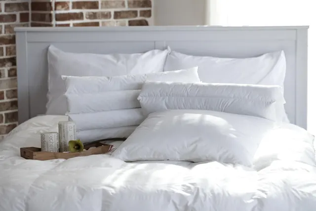

Alerjisi olanlar için yorgan ve yastık: toz akarı, yıkama ve kılıf
Toz akarı alerjisinde önemli olan dolgunun adı değil, ne sıklıkla ve kaç derecede yıkanabildiği. Pratik öneriler ve araştırmaların söyledikleri.
"Antialerjik yorgan" etiketi çok yaygın. Ama alerji uzmanlarının üzerinde durduğu şey çoğu zaman etiketteki kelime değil, yatağın ne kadar temiz tutulabildiği. Bu yazıda toz akarı alerjisi olan ya da hapşırarak uyanan aileler için pratik bir yol haritası çiziyoruz. Teşhis ve tedavi için mutlaka alerji uzmanınıza danışın.
Yatakta alerjiye ne sebep olur?
Yatak, yastık ve yorganda en sık alerjen ev tozu akarlarıdır. Gözle görülmeyen bu canlılar dökülen deri parçacıklarıyla beslenir; sıcak ve nemli ortamı sever. Alerjiyi akarın kendisinden çok dışkısındaki proteinler tetikler. Kuş tüyü dolgu bazı kişilerde ayrıca tüy alerjisine yol açabilir.
Sıcak yıkama neden önemli?
Amerikan Alerji, Astım ve İmmünoloji Akademisi (AAAAI), toz akarı alerjisinde yatak takımlarının haftada bir sıcak suda (yaklaşık 54–60 °C) yıkanmasını önerir. Düşük sıcaklıkta yıkama alerjeni azaltsa da akarları öldürmekte yetersiz kalabilir. Bu yüzden:
- Nevresim, çarşaf ve yastık kılıfını haftada bir 60 °C'de yıkayın (pamuk nevresim takımı buna uygundur).
- Yorgan ve yastığın kendisini de düzenli yıkamak istiyorsanız, etiketinde yüksek sıcaklığa izin veren sentetik dolgu seçin (silikon yorgan, silikon yastık).
- Yün ve pamuk dolgu yıkanmaz; bu dolgularda sık yıkanan kılıf ve düzenli havalandırma şarttır.
Akar geçirmez kılıf işe yarar mı?
Sık dokunmuş, fermuarlı "akar geçirmez" kılıflar yatak ve yastıktaki akar alerjenini azaltır. Ancak Cochrane'in sistematik derlemesi (Gøtzsche ve Johansen, 2008) astımlı hastalarda bu tür önlemlerin tek başına belirtilerde anlamlı bir iyileşme göstermediğini bildirdi. Yani kılıf faydalı bir parça ama tek başına mucize değil; temizlik, nem kontrolü ve doktorunuzun tedavisiyle birlikte düşünülmeli.
Hangi dolgu daha iyi?
| Dolgu | Alerji açısından |
|---|---|
| Silikon / elyaf | Sıcak yıkanabilen modeller pratik; hayvansal lif içermez. |
| Pamuk | Bitkisel lif; dolgu yıkanmaz, kılıf ve havalandırma önemli. |
| Yün | Bazı kişilerde ciltte kaşıntı yapabilir; yıkanmaz. |
| Kaz tüyü | Tüy alerjisi olanlara uygun değil. |
Yatak odası için pratik liste
- Yatak takımlarını haftada bir 60 °C'de yıkayın.
- Yatak odasını her sabah 10 dakika havalandırın; yorganı hemen toplamayın, nem uçsun.
- Odanın nemini düşük tutun (akarlar nemli ortamı sever).
- Yatağın üzerine peluş oyuncak, fazla minder yığmayın.
- Yatağı korumak için yıkanabilir alez kullanın.
- Belirtiler sürüyorsa alerji testi ve tedavi için uzmana başvurun.
Sorunuz mu var?
Yatağınızın ölçüsünü, odanızın ne kadar sıcak olduğunu ya da yorganınızın fotoğrafını gönderin; Ramazan usta önerisini söylesin.
Sık sorulan sorular
Antialerjik yorgan alerjiyi geçirir mi?
Hayır. Etiketteki ifade tek başına yeterli değildir. Sık ve sıcak yıkanabilen yatak takımı ile düzenli temizlik alerjen miktarını azaltır; tedavi için alerji uzmanınıza danışın.
Toz akarı için yorgan kaç derecede yıkanmalı?
AAAAI, yatak takımlarının haftada bir yaklaşık 54–60 °C sıcak suda yıkanmasını önerir. Yorganınızın etiketindeki sıcaklık sınırına uyun.
Yün yorgan alerji yapar mı?
Bazı kişilerde ciltte kaşıntı ya da hassasiyet yapabilir. Toz akarı alerjisinde ise asıl sorun yün dolgunun yıkanamamasıdır; kılıf kullanın ve düzenli havalandırın.
Yazıda geçen ürünler
Silikonla kaplanmış boşluklu polyester elyaf: hafif, yıkanabilir, uygun fiyatlı.


Kaynaklar
- American Academy of Allergy, Asthma & Immunology (AAAAI). Dust mite allergy: tips to remember.
- Gøtzsche P.C., Johansen H.K. (2008). House dust mite control measures for asthma. Cochrane Database of Systematic Reviews, CD001187.
Bu yazı genel bilgilendirme amaçlıdır; tıbbi tavsiye değildir. Sağlıkla ilgili şikâyetleriniz için hekiminize danışın.